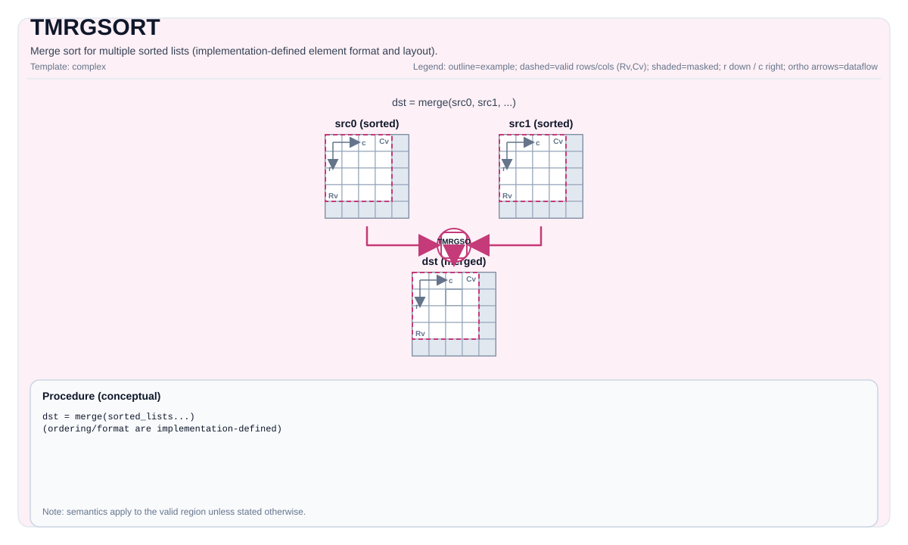

TMRGSORT¶
指令示意图¶

简介¶
硬件加速的多路归并排序（vmrgsort4）。将最多 4 个已预排序的列表归并为一个降序排列的输出。每个元素是固定 8 字节的值-索引对结构体。
数据格式：值-索引对¶
TMRGSORT 操作的是 8 字节结构体，Tile 中的每个元素构成值-索引对的一部分：
| 数据类型 | 值字段 | 填充 | 索引字段 | 结构体大小 | 每结构体占 Tile 元素数 |
|---|---|---|---|---|---|
float |
4 字节 | 0 | 4 字节（uint32_t） |
8 字节 | 2 个元素 |
half |
2 字节 | 2 字节 | 4 字节（uint32_t） |
8 字节 | 4 个元素 |
因此 Tile 中排序对的数量为：
float：numPairs = ValidCol / 2half：numPairs = ValidCol / 4
实现通过 ELE_NUM_SHIFT 将 ValidCol 转换为对数：
// float: ELE_NUM_SHIFT = 1 → numPairs = ValidCol >> 1
// half: ELE_NUM_SHIFT = 2 → numPairs = ValidCol >> 2数学语义¶
将已预排序的输入列表按降序归并到 dst 中：
\[ \mathrm{dst} = \mathrm{merge\_desc}(\mathrm{src}_0, \mathrm{src}_1, \ldots) \]
两种变体¶
变体 A：单列表排序 — TMRGSORT(dst, src, blockLen)¶
将 src 视为 4 个连续等长的已排序块，在单个 Tile 内完成 4 路归并。
src Tile（1 行）：
┌── blockLen ──┬── blockLen ──┬── blockLen ──┬── blockLen ──┐
│ 块 0 │ 块 1 │ 块 2 │ 块 3 │
│ （已预排序） │ （已预排序） │ （已预排序） │ （已预排序） │
└──────────────┴──────────────┴──────────────┴──────────────┘
↓ vmrgsort4
dst Tile（1 行）：
┌──────────── 归并结果（降序）────────────┐
└─────────────────────────────────────────┘约束：
blockLen必须是 64 的倍数。src.GetValidCol()必须是blockLen * 4的整数倍。repeatTimes = src.GetValidCol() / (blockLen * 4)必须在[1, 255]范围内。- 不需要
tmp— 结果直接写入dst。 - 无
exhausted参数（固定为非挂起模式）。
blockLen 对应的排序对数：
| blockLen | float 每块对数 | half 每块对数 |
|---|---|---|
| 64 | 32 | 16 |
| 128 | 64 | 32 |
| 256 | 128 | 64 |
变体 B：多列表归并 — TMRGSORT<..., exhausted>(dst, executedNumList, tmp, src0, src1, [src2], [src3])¶
将 2~4 个独立的已预排序列表归并为一个有序输出。
src0 Tile ──┐
src1 Tile ──┤
src2 Tile ──┼──→ vmrgsort4 ──→ tmp ──→ dst
src3 Tile ──┘模板参数 exhausted：
exhausted = false：正常归并 — 处理所有输入数据。exhausted = true：当任一输入列表耗尽时，硬件挂起并通过executedNumList返回每个列表实际处理的元素数量。
MrgSortExecutedNumList 结构体：
struct MrgSortExecutedNumList {
uint16_t mrgSortList0; // 列表 0 已处理的元素数
uint16_t mrgSortList1; // 列表 1 已处理的元素数
uint16_t mrgSortList2; // 列表 2 已处理的元素数
uint16_t mrgSortList3; // 列表 3 已处理的元素数
};仅在 exhausted = true 时有意义。数据来自硬件寄存器 VMS4_SR。
不同列表数的 mask 配置：
| 列表数 | Xt[11:8] mask | 未使用的列表 |
|---|---|---|
| 2 列表 | 0b0011 |
src2, src3（size=0） |
| 3 列表 | 0b0111 |
src3（size=0） |
| 4 列表 | 0b1111 |
无 |
汇编语法¶
同步形式（概念性）：
%dst, %executed = tmrgsort %src0, %src1 {exhausted = false}
: !pto.tile<...>, !pto.tile<...> -> (!pto.tile<...>, vector<4xi16>)AS Level 1（SSA）¶
%dst = pto.tmrgsort %src, %blockLen : (!pto.tile<...>, dtype) -> !pto.tile<...>
%dst, %executed = pto.tmrgsort %src0, %src1, %src2, %src3 {exhausted = false}
: (!pto.tile<...>, !pto.tile<...>, !pto.tile<...>, !pto.tile<...>) -> (!pto.tile<...>, vector<4xi16>)AS Level 2（DPS）¶
pto.tmrgsort ins(%src, %blockLen : !pto.tile_buf<...>, dtype) outs(%dst : !pto.tile_buf<...>)
pto.tmrgsort ins(%src0, %src1, %src2, %src3 {exhausted = false} : !pto.tile_buf<...>, !pto.tile_buf<...>, !pto.tile_buf<...>, !pto.tile_buf<...>)
outs(%dst, %executed : !pto.tile_buf<...>, vector<4xi16>)C++ 内建接口¶
声明于 include/pto/common/pto_instr.hpp：
单列表变体¶
template <typename DstTileData, typename SrcTileData, typename... WaitEvents>
PTO_INST RecordEvent TMRGSORT(DstTileData &dst, SrcTileData &src, uint32_t blockLen, WaitEvents &... events);多列表变体（2/3/4 列表）¶
// 4 列表
template <typename DstTileData, typename TmpTileData, typename Src0TileData, typename Src1TileData,
typename Src2TileData, typename Src3TileData, bool exhausted, typename... WaitEvents>
PTO_INST RecordEvent TMRGSORT(DstTileData &dst, MrgSortExecutedNumList &executedNumList, TmpTileData &tmp,
Src0TileData &src0, Src1TileData &src1, Src2TileData &src2, Src3TileData &src3,
WaitEvents &... events);
// 3 列表
template <typename DstTileData, typename TmpTileData, typename Src0TileData, typename Src1TileData,
typename Src2TileData, bool exhausted, typename... WaitEvents>
PTO_INST RecordEvent TMRGSORT(DstTileData &dst, MrgSortExecutedNumList &executedNumList, TmpTileData &tmp,
Src0TileData &src0, Src1TileData &src1, Src2TileData &src2,
WaitEvents &... events);
// 2 列表
template <typename DstTileData, typename TmpTileData, typename Src0TileData, typename Src1TileData,
bool exhausted, typename... WaitEvents>
PTO_INST RecordEvent TMRGSORT(DstTileData &dst, MrgSortExecutedNumList &executedNumList, TmpTileData &tmp,
Src0TileData &src0, Src1TileData &src1, WaitEvents &... events);约束¶
通用约束（A2A3 和 A5）¶
| 约束项 | 要求 |
|---|---|
| Tile 类型 | 所有 Tile 必须是 TileType::Vec |
| 行数 | 所有 Tile 必须 Rows == 1 |
| 布局 | 所有 Tile 必须是行主序（BLayout::RowMajor） |
| 数据类型 | half 或 float，且所有 Tile 一致 |
| UB 内存 | 总计不超过 192 KiB（UB_SIZE） |
各变体的 UB 内存约束¶
| 变体 | 约束 |
|---|---|
| 单列表 | (src.Cols + dst.Cols) * sizeof(T) < UB_SIZE |
| 2 列表 | (src0.Cols + src1.Cols + tmp.Cols) * sizeof(T) < UB_SIZE，且 tmp.Cols + src0.Cols <= UB_SIZE / sizeof(T) |
| 3 列表 | (src0.Cols + src1.Cols + src2.Cols + tmp.Cols) * sizeof(T) < UB_SIZE |
| 4 列表 | (src0.Cols + src1.Cols + src2.Cols + src3.Cols + tmp.Cols) * sizeof(T) < UB_SIZE |
单列表约束¶
blockLen必须是 64 的倍数。src.GetValidCol()必须是blockLen * 4的整数倍。repeatTimes = src.GetValidCol() / (blockLen * 4)必须在[1, 255]范围内。
临时空间¶
多列表变体（2/3/4 列表）¶
tmp 被使用作为 vmrgsort4 硬件指令的中间输出缓冲区。归并排序结果首先写入 tmp，然后通过 MovUb2Ub（UB 到 UB 的 memcpy）复制到 dst。
tmp必须与dst和所有srcTile 具有相同的元素类型（half或float）。tmp必须Rows == 1且为行主序。tmp的 Cols 必须至少为所有输入源 Cols 之和：- 2 列表：
tmp.Cols >= src0.Cols + src1.Cols - 3 列表：
tmp.Cols >= src0.Cols + src1.Cols + src2.Cols - 4 列表：
tmp.Cols >= src0.Cols + src1.Cols + src2.Cols + src3.Cols
- 2 列表：
- 辅助函数
GETMRGSORTTMPSIZE<...>()返回所需的tmpCols：
// 2 列表
GETMRGSORTTMPSIZE<Src0Tile, Src1Tile>() = Src0Tile::Cols + Src1Tile::Cols
// 3 列表
GETMRGSORTTMPSIZE<Src0Tile, Src1Tile, Src2Tile>() = Src0Tile::Cols + Src1Tile::Cols + Src2Tile::Cols
// 4 列表
GETMRGSORTTMPSIZE<Src0Tile, Src1Tile, Src2Tile, Src3Tile>() = Src0Tile::Cols + Src1Tile::Cols + Src2Tile::Cols + Src3Tile::Cols单列表变体¶
不需要 tmp。单列表变体直接写入 dst。
典型用法：TopK¶
TMRGSORT 常用于通过迭代归并排序实现 TopK 选择：
阶段 1：单列表排序（逐步增大 blockLen）
blockLen=64: 每 256 个元素 → 4 路归并 → 256 个有序元素
blockLen=256: 每 1024 个元素 → 4 路归并 → 1024 个有序元素
... 直到 blockLen * 4 > totalCols
阶段 2：尾部归并（SortTailBlock）
使用 2 列表变体归并剩余块，保留前 K 个元素A2A3 与 A5 的差异¶
两者实现几乎完全相同，均调用 vmrgsort4 硬件指令。微小差异：
| 项目 | A2A3 | A5 |
|---|---|---|
UB_SIZE 常量 |
硬编码 196608（192×1024） |
使用 PTO_UBUF_SIZE_BYTES |
TMRGSORT_BLOCK_LEN |
定义了常量 64 |
未定义（直接使用字面量） |
| 核心逻辑 | 相同 | 相同 |
示例¶
单列表排序（自动模式）¶
#include <pto/pto-inst.hpp>
using namespace pto;
void example_single() {
using SrcT = Tile<TileType::Vec, float, 1, 256>;
using DstT = Tile<TileType::Vec, float, 1, 256>;
SrcT src;
DstT dst;
TMRGSORT(dst, src, /*blockLen=*/64);
}多列表归并（4 列表，非挂起模式）¶
#include <pto/pto-inst.hpp>
using namespace pto;
void example_multi4() {
using SrcT = Tile<TileType::Vec, float, 1, 128>;
using DstT = Tile<TileType::Vec, float, 1, 512>;
using TmpT = Tile<TileType::Vec, float, 1, 512>;
SrcT src0, src1, src2, src3;
DstT dst;
TmpT tmp;
MrgSortExecutedNumList executedNumList;
TMRGSORT<DstT, TmpT, SrcT, SrcT, SrcT, SrcT, /*exhausted=*/false>(
dst, executedNumList, tmp, src0, src1, src2, src3);
}多列表归并（2 列表，挂起模式）¶
#include <pto/pto-inst.hpp>
using namespace pto;
void example_exhausted() {
using SrcT = Tile<TileType::Vec, float, 1, 64>;
using DstT = Tile<TileType::Vec, float, 1, 128>;
using TmpT = Tile<TileType::Vec, float, 1, 128>;
SrcT src0, src1;
DstT dst;
TmpT tmp;
MrgSortExecutedNumList executedNumList;
TMRGSORT<DstT, TmpT, SrcT, SrcT, /*exhausted=*/true>(
dst, executedNumList, tmp, src0, src1);
// 执行后：
// executedNumList.mrgSortList0 = src0 已处理的元素数
// executedNumList.mrgSortList1 = src1 已处理的元素数
}手动模式（单列表）¶
#include <pto/pto-inst.hpp>
using namespace pto;
void example_manual() {
using SrcT = Tile<TileType::Vec, float, 1, 256>;
using DstT = Tile<TileType::Vec, float, 1, 256>;
SrcT src;
DstT dst;
TASSIGN(src, 0x1000);
TASSIGN(dst, 0x2000);
TMRGSORT(dst, src, /*blockLen=*/64);
}汇编示例（ASM）¶
自动模式¶
# 自动模式：由编译器/运行时负责资源放置与调度。
%dst = pto.tmrgsort %src, %blockLen : (!pto.tile<...>, dtype) -> !pto.tile<...>手动模式¶
# 手动模式：先显式绑定资源，再发射指令。
# 可选（当该指令包含 tile 操作数时）：
# pto.tassign %arg0, @tile(0x1000)
# pto.tassign %arg1, @tile(0x2000)
%dst = pto.tmrgsort %src, %blockLen : (!pto.tile<...>, dtype) -> !pto.tile<...>PTO 汇编形式¶
%dst = pto.tmrgsort %src, %blockLen : (!pto.tile<...>, dtype) -> !pto.tile<...>
# AS Level 2 (DPS)
pto.tmrgsort ins(%src, %blockLen : !pto.tile_buf<...>, dtype) outs(%dst : !pto.tile_buf<...>)